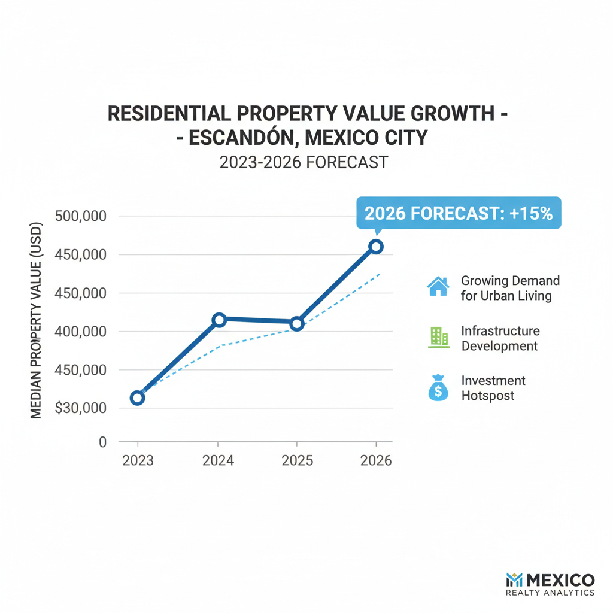

Architectural Guide 2026
Escandón: The Precision of Edge-of-Prime Luxury in Mexico City
Beyond the hyper-gentrified, Escandón beckons. We sculpt future-proof assets from historic canvases, merging exacting architectural standards with sophisticated market intelligence to yield unparalleled returns in Mexico City's most compelling 'edge-of-prime' district.
The Resident Architect's View
From my window in Condesa, I often look towards Escandón, drawn by its distinct urban geometry and the way the late afternoon sun catches the pre-1900 facades on Calle Astrónomos. There’s a particular calm on its tree-lined streets, a contrast to Condesa's frenetic pace, yet with the same rich architectural heritage. I admire the neighborhood’s grounded authenticity, where the aroma of a family kitchen mingles with the faint clang of a distant gasero, a subtle reminder of Mexico City's ceaseless pulse. It's a place where history breathes quietly, offering a profound sense of rootedness that is increasingly rare in our rapidly evolving metropolis.

Erik Martínez, AIA
Principal Architect. Former SHoP Architects NYC. Bringing international precision to CDMX's most complex heritage assets.
Iconic Landmarks
- Calle Astrónomos (Historic Corridor)
- Calle Carlos B. Zetina (Cataloged Structures)
- Escandón Sección I & Sección II (Distinct Enclaves)
Escandón: A Love Letter to Architectural Precision
Escandón, gracefully nestled between the established prestige of Condesa and Roma and the commercial vigor of Nápoles, has decisively redefined itself. It is no longer merely an adjacent residential zone but a calculated strategic play in Mexico City's 2026 real estate landscape. Its historic fabric, characterized by robust early 20th-century structures and an urban plan that prioritizes human scale, now provides the ideal canvas for a new generation of expatriate investors and discerning residents. We recognize its transition as the quintessential "edge-of-prime" market, offering comparable lifestyle and proximity at an accessible entry threshold, fundamentally driven by the spillover effect from its cost-prohibitive neighbors.
Investment Dynamics: The Alpha in Lifestyle Properties
While Mexico City's broader real estate market saw nominal property price growth of approximately 5% in 2026 (translating to a marginal 1-2% real gain after inflation), Escandón is a decoupled micro-market. We are seeing sustained annual price appreciation between 6% and 9% here. The highest alpha is generated not by ultra-luxury penthouses (which see 3-5% gains), but by the strategic acquisition of dated local housing stock. Our focus is on targeted architectural renovations that transform these properties into high-specification "lifestyle" units. These assets, specifically when furnished, command a substantial 15% to 25% rental premium over unfurnished units, contributing to a projected cumulative 5-year Return on Investment (ROI) of 45% to 65% for well-positioned assets. The central Mexico City market's exceptionally tight 5% vacancy rate further solidifies cash flow stability, with correctly priced units leasing within weeks.
Geotechnical Realities: Navigating Zone II & III
The ground beneath Escandón is as complex as its architectural heritage. The neighborhood straddles a critical boundary: its western flanks, closer to Chapultepec, sit on Zone II (Transition) soils—intermixed sand, silt, and clay. However, as one moves eastward and southward, Escandón definitively enters the hazardous Zone III (Lakebed / Soft Soil) classification. This geological reality is paramount. Zone III's highly compressible, water-saturated lacustrine clays extend over 50 meters deep, leading to a phenomenon known as kinematic amplification. This amplifies low-frequency seismic waves by up to 100% compared to firmer soils, demanding an uncompromising approach to structural engineering.
For any major renovation or new build in Escandón's Zone III sectors, standard foundations are insufficient. We mandate sophisticated, capital-intensive systems: deep friction piles or massive, compensated foundation rafts. These mitigate both dynamic lateral loading from seismic events and chronic, static differential settlement caused by aquifer subsidence. Our team adheres rigorously to post-2017 seismic codes, ensuring structures are designed for a peak ground acceleration of 0.10 to 0.11 (relative to gravity) in Zone III. We bridge the critical gap between US NCARB/AIA engineering standards and local construction practices, ensuring structural integrity while eliminating the "Gringo Tax" by employing transparent cost-plus contractor models and direct material procurement. This approach ensures fair market pricing, with luxury builds costing between MXN 30,000 and 50,000 per square meter, not the inflated MXN 75,000+ often quoted to foreign buyers.
Architectural Integrity: The INBAL & SEDUVI Imperative
Escandón is a tapestry of architectural periods, with significant portions classified as Áreas de Conservación Patrimonial. This means that properties built before 1900 fall under the strict purview of INAH (National Institute of Anthropology and History), while the numerous 20th-century Art Deco, Functionalist, and Neocolonial structures are protected by INBAL (National Institute of Fine Arts and Literature). Beyond these, SEDUVI (Secretaría de Desarrollo Urbano y Vivienda) governs land use, with a prevalent zoning code of H/3/20—signifying residential use, a strict maximum of three stories, and a non-negotiable 20% permeable open space.
Acquiring a cataloged property in Escandón means accepting that absolute developmental control over the exterior envelope is relinquished. Any facade modification, vertical expansion, or even basic restoration requires a rigorous Dictamen Técnico from INBAL/INAH and SEDUVI. Modern materials such as highly reflective commercial glass are expressly prohibited, as are any fenestration replacements that deviate from original geometric profiles. Replacements must be in premium milled wood or matte aluminum. Volumetric expansions, such as a modern penthouse, must be substantially recessed (retranqueado) from the historic facade to preserve the street's visual continuum. We specialize in navigating these complex Heritage Hurdles, from securing a Manifestación de Construcción (which can take 6 to 12 months in Miguel Hidalgo) to ensuring compliance with specific cataloged properties on streets like Calle Astrónomos (numbers 15, 19, 21, 61, 65) and Calle Carlos B. Zetina (numbers 106, 108, 151, 153, 155, 159), thereby avoiding punitive fines and project suspensions (*estado de clausura*).
Hydrological Autonomy: Beyond the Cutzamala Recovery
The Cutzamala system's remarkable hydrological recovery in early 2026—with reservoirs at 95.5% to 97.4% capacity—offers a macroeconomic reprieve after severe droughts. However, this masks chronic localized infrastructural failures in Escandón. Mexico City's antiquated distribution network loses up to 40% of treated water to subterranean fractures, and the city has mandated a 50% reduction in Cutzamala reliance. For properties in Escandón, this translates to inherently unpressurized and intermittent municipal water delivery. To guarantee the absolute water autonomy demanded by our discerning clientele, the architectural solution is mandatory: high-capacity subterranean cisterns (minimum 2,000 to 5,000 liters) coupled with robust hydropneumatic pump systems. This ensures uninterrupted water supply and consistent pressure, insulating your investment from grid volatility and enhancing tenant retention.
Architectural Feasibility: Escandon 2026
| Project Type | Avg. Permit Time | Seismic Risk Level | Conservation Status |
|---|---|---|---|
| Renovated Mid-Market Apartment (6-9% Annual Appreciation) | 3 - 6 Months (Renovation Post-Permitting) | Moderate (Requires Meticulous Contractor Management) | High ROI Potential (45-65% Cumulative 5-Year) |
| Heritage Renovation (e.g., on Calle Astrónomos) | 12 - 24 Months (Including 6-12 Months Permitting) | High (INBAL/INAH Compliance, Specialized Material Sourcing) | Scarcity Premium (Highly Differentiated Asset) |
| New Build (on Zone III Soft Soil with H/3/20 Zoning) | 18 - 36 Months (Including 6-12 Months Permitting) | Very High (Massive Capital Expenditure for Foundations, SEDUVI Oversight) | Deep Engineering Expertise Required (DRO Liability Critical) |
Intelligent Renovations: Crafting "Bulletproof" Habitability
Our renovation philosophy in Escandón extends beyond aesthetics to engineer absolute utility autonomy. We focus on "bulletproof" properties designed for the elite remote-worker demographic. This involves the systematic installation of double-glazed (duovent) window systems with an acoustic Polyvinyl Butyral (PVB) interlayer, dramatically reducing external noise from 65-75 decibels to sub-30 levels. Coupled with acoustic drywall and solid-core doors, we transform interiors into serene sanctuaries. We integrate robust Uninterruptible Power Supply (UPS) units for network hardware, ensuring uninterrupted connectivity via Totalplay's symmetric gigabit fiber. These specialized interventions aren't upgrades; they are foundational to attracting and retaining high-yield tenants in Escandón.
Curated Interiors: A Dialogue Between History and Modernity
The interior design for Escandón residences embraces a dialogue between the neighborhood's historic character and contemporary luxury. We advocate for a sophisticated palette that respects the existing architectural integrity while introducing high-performance elements. Custom millwork, bespoke lighting design that thoughtfully illuminates deeper floor plans, and selections of natural, locally sourced materials like cantera stone or fine woods create a timeless appeal. Crucially, layouts are optimized for functionality and flow, catering to the exacting demands of international residents who value both aesthetic refinement and seamless integration of modern technology.
The Escandon Cheat Sheet
- Best Streets Calle Astrónomos, Calle Ingenieros, Calle Carlos B. Zetina, Calle José Martí
- Zoning Code H/3/20 (Habitacional, 3 levels, 20% free area), HC (Habitacional con Comercio)
- Est. Cost / m² MXN 30,000 - 50,000+ per m² (Fair Market for Luxury Build)
- Best Coffee Local esquina cafés or artisanal panaderías
- Local Quirk The stark transition from Seismic Zone II to Zone III within its boundaries, demanding distinct engineering approaches.
The Challenge
The primary challenge in Escandón is reconciling its dual geological footprint—straddling Zone II and Zone III—with strict H/3/20 density limits and pervasive noise pollution. Add to this the complex INBAL/INAH heritage mandates that restrict exterior alterations on numerous cataloged streets.
The bureaucratic reality, particularly the 6-to-12-month processing time for a Manifestación de Construcción in the Miguel Hidalgo Alcaldía, demands extreme capital patience. Furthermore, the progressive ISAI property transfer tax, which can escalate closing costs to 9-12% of asset value, often catches international investors off-guard.
Our Solution
Our solution is a holistic, data-driven approach. We leverage a deep understanding of Escandón's unique microclimates—acoustic, hydrological, and seismic. We implement PVB acoustic glazing and high-capacity 5,000-liter cisterns as standard, ensuring absolute habitability. For Zone III properties, our engineering prioritizes deep friction piles and compensated rafts, structurally validating every asset.
We eliminate financial opacity and the "Gringo Tax" through radical transparency. By insisting on "cost-plus" contractor models and working with an integrated network of top-tier Notarios Públicos (who provide exhaustive title diligence and fiscal accuracy) and certified DROs (Directores Responsables de Obra), we ensure legal compliance and structural integrity, protecting your investment from unforeseen liabilities and inflated costs.


Planning to Buy?
Don't sign a contract before a technical audit. We offer pre-purchase structural assessments in Escandon.
2026 Cost Report
Get our detailed breakdown of current labor and material costs for luxury residential in CDMX.
Start Your Escandon Legacy
NYC Precision. Mexican Craft. We eliminate uncertainty for international investors.